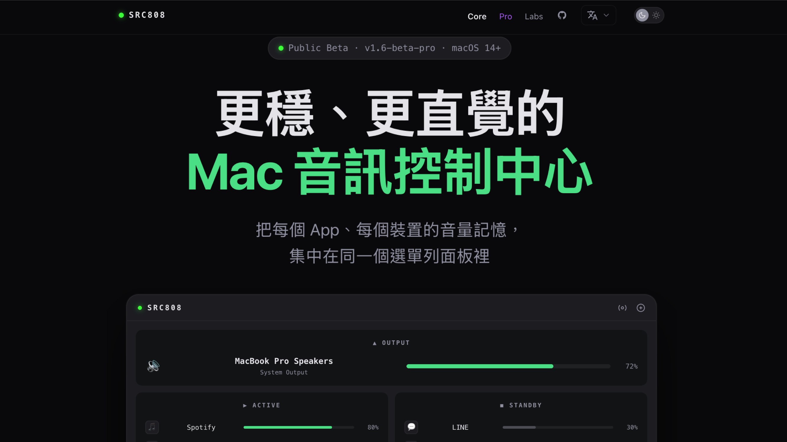

安裝完成後
從 menu bar 開始
這份指南會帶你完成第一次啟動流程
包含圖示位置、基本面板區塊與權限說明

目前公開版本的面板預覽。實際使用時會由 menu bar 圖示進入。
01
安裝前確認
在開始之前，先確定你的 Mac 符合基本條件。這裡延續首頁的 Requirements，但改成更接近操作前檢查表的寫法。
需要的環境
- macOS Sonoma 14.2 或更新版本
- Apple Silicon 或 Intel Mac
- 能接受第一次啟動時出現系統權限提示
你可能會看到的提示
- Driver Extension 批准
- Apple Events 權限
- 媒體鍵相關權限提示
02
下載與安裝
這段保持簡單直接。首頁負責說服，指南頁負責帶你完成第一輪 setup。
下載最新版本 DMG
第一次開啟時允許系統檢查
安裝完成後要去哪裡找
04
基本界面介紹
點開 menu bar 圖示之後，你看到的會是一個集中式音訊控制面板。這裡建議用「區塊功能」來理解，而不是把它當成傳統偏好設定頁。
Output 區塊
最上方會顯示目前音訊輸出裝置，例如 MacBook 喇叭、耳機或外接顯示器，並附上目前整體音量狀態。
Active / Standby Apps
Active Apps
正在輸出音訊的 App 會列在這裡。你可以逐一調整各自音量，不必來回切換不同視窗。
Standby Apps
暫時沒有播放聲音、但仍可被 SRC808 記住音量狀態的 App 會待在這一區，方便隨時預先調整。
Mini Media Controller
若你啟用了 Spotify / Apple Music 整合，這裡會顯示目前播放內容與基本播放控制。
05
第一次啟動可能出現的權限
這些提示不是異常，而是 SRC808 能正常工作的必要條件。重點是讓使用者知道每個提示為什麼出現，而不是只看到系統跳窗就緊張。
Driver Extension
Apple Events
媒體鍵相關權限
06
第一次建議操作
如果想讓新使用者在 30 秒內知道這款產品的價值，這裡是最重要的一段。
先確認目前輸出裝置
先在 menu bar 打開 SRC808，確認目前輸出裝置是否正確，這會直接影響你接下來看到的音量狀態。
用兩個 App 測一次 per-app volume
播放兩個不同 App 的音訊，試著把其中一個調低，最快能感受到 SRC808 和一般系統音量控制的差異。
切換裝置看看記憶是否生效
切換到另一個輸出裝置，再切回來，觀察 SRC808 是否記住音量設定，這是這款產品很核心的價值之一。
需要時再開 Apple Events
若你會用 Spotify 或 Apple Music，再決定是否授予 Apple Events 來啟用 Mini Media Controller。
07